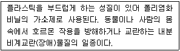
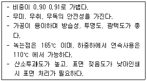
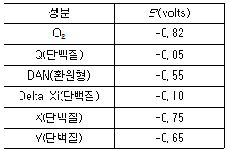
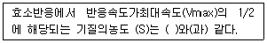

식품기사 (2021-08-14 기출문제)
1과목: 식품위생학
1. 아플라톡신(aflatoxin)은 무엇에 의해 생성되는 독소인가?
- Aspergillus oryzae
- Aspergillus flavus
- Aspergillus niger
- Aspergillus glaucus
(정답률: 88%)

2. 황변미(yellowed rice)중독의 원인이 되는 주미생물은?
- Penicillium citreoviride
- Fusarium tricinctum
- Aspergillus flavus
- Claviceps purpurea
(정답률: 75%)
3. 유화제로서 사용되는 식품첨가물은?
- 구연산
- 아질산나트륨
- 글리세린 지방산 에스테르
- 사카린
(정답률: 88%)
4. 어떤 첨가물의 LD50 의 값이 높을 경우 이것이 의미하는 것은 무엇인가?
- 독성이 약하다.
- 독성이 강하다.
- 보존성이 작다.
- 보존성이 크다.
(정답률: 80%)
5. 다음 중 내분비장애 물질이 아닌 것은?
- Dioxin
- Phthalate ester
- Ricinine
- PCB
(정답률: 65%)
6. 10 kGy 이하의 방사선 조사가 식품에 미치는 영향에 대한 설명으로 옳은 것은?
- 단백질, 탄수화물, 지방과 같은 거대분자 영양물질은 비교적 안정하다.
- 방사선 조사에 의한 무기질 변화가 많다.
- 식품의 관능적 품질에 상당한 영향을 준다.
- 모든 병원균을 완전히 사멸시킨다.
(정답률: 76%)
7. 다음 중 보존료의 사용목적이 아닌 것은?
- 식품의 영양가 유지
- 가공식품의 변질, 부패방지
- 가공식품의 수분증발 방지
- 가공식품의 신선도 유지
(정답률: 67%)
8. 대장균군의 감별 시험법(반응)이 아닌 것은?
- Enterotoxin 시험
- Indole 반응
- Methyl red 시험
- Voges - Proskauer 반응
(정답률: 63%)
9. 국제수역사무국에서 지정한 광우병의 특정 위해물질(SRM, specified riskmaterial)이 아닌 것은?
- 우유 및 유제품
- 뇌 및 눈을 포함한 두개골
- 척수를 포함한 척추
- 십이지장에서 직장까지의 내장
(정답률: 82%)
10. 식품등의 표시기준에 의거하여 다류 및 커피의 카페인 함량을 몇 퍼센트 이상 제거한 제품을 “탈카페인(디카페인) 제품”으로 표시할 수 있는가?
- 90%
- 80%
- 70%
- 60%
(정답률: 79%)
11. 식품에서 미생물의 증식을 억제하여 부패를 방지하는 방법으로 가장 거리가 먼 것은?
- 저온
- 건조
- 진공포장
- 여과
(정답률: 89%)
12. 역학의 3대 요인이 아닌 것은?
- 감염경로
- 숙주
- 병인
- 환경
(정답률: 74%)
13. 식품첨가물 중 보존료가 아닌 것은?
- 안식향산
- 차아염소산나트륨
- 소르빈산
- 프로피온산나트륨
(정답률: 75%)
14. 아래에서 설명하는 유해물질은?

- 퓨란
- 폴리염화비페닐(PCBs)
- 비스페놀
- 프탈레이트류
(정답률: 52%)
15. 다음 중 유해 합성 착색료(제)는?
- 식용색소적색제2호
- 아우라민(auramine)
- β-카로틴(β-carotene)
- 이산화티타늄(titanium dioxide)
(정답률: 82%)
16. 물에 녹기 쉬운 무색의 가스살균제로 방부력이강하여 0.1%로서 아포균에 유효하며, 단백질을변성시키고 중독 시 두통, 위통, 구토 등의 중독중상을 일으키는 물질은?
- 포름알데히드
- 불화수소
- 붕산
- 승홍
(정답률: 80%)
17. 식품에서 생성되는 아크릴아마이드(acrylamide)에 의한 위험을 낮추기 위한 방법으로 잘못된 것은?
- 감자는 8℃ 이상의 음지에서 보관하고냉장고에 보관하지 않는다.
- 튀김의 온도는 160℃ 이상으로 하고, 오븐의 경우는 200℃ 이상으로 조절한다.
- 빵이나 시리얼 등의 곡류 제품은 갈색으로변하지 않도록 조리하고, 조리 후 갈색으로변한 부분은 제거한다.
- 가정에서 생감자를 튀길 경우 물과 식초의혼합물(1:1 비율)에 15분간 침지한다.
(정답률: 82%)
18. 식품용 기구, 용기 또는 포장과 위생상 문제가되는 성분의 연결이 틀린 것은?
- 종이제품 - 형광염료
- 법랑피복제품 - 납
- 페놀수지제품 - 페놀
- PVC제품 - 포르말린
(정답률: 82%)
19. 아래에서 설명하는 플라스틱 포장재료는?

- 폴리에틸렌
- 폴리프로필렌
- 폴리스틸렌
- 폴리염화비닐
(정답률: 56%)
20. 황색포도상구균에 대한 설명으로 틀린 것은?
- 대표적인 독소형 식중독균이다.
- 통성혐기성균으로 산소의 존재 여부와 상관없이 성장할 수 있다.
- 독소형성이 최대인 온도대는 21 ~37℃정도이다.
- 황색포도상구균의 독소는 대부분 단백질 성분이므로 열처리에 의해 쉽게 분해된다.
(정답률: 78%)
2과목: 식품화학
21. 당알코올 중 설탕과 거의 같은 감미를 가지면서 혈압 상승과 충치 예방, 당뇨 환자용 감미료로 사용되는 것은?
- 자일리톨(xylitol)
- 이노시톨(inositol)
- 맥아당(maltose)
- 과당(fructose)
(정답률: 89%)
22. 관능검사의 차이식별검사방법 중 종합적차이검사에 해당하는 방법은?
- 삼점 검사
- 다중비교검사
- 순위법
- 평점법
(정답률: 71%)
23. 감자칩과 같은 식품의 갈변과 지방산패를억제할 목적으로 어떤 효소를 첨가해야하는가?
- glucose oxidase, catalase
- lipoxygenase, peroxidase
- peroxidase, bromelain
- pectin esterase, tyrosinase
(정답률: 64%)
24. 요오드가(iodine value)란 지방의 어떤 특성을 표시하는 기준인가?
- 분자량
- 경화도
- 유리지방산
- 불포화도
(정답률: 71%)
25. 시중에서 구입한 자(measurement)를 이용하여 길이 10.0 cm로 표시된 껌의 길이를 5회 측정하였다. 그 값은 각각 8.89, 8.82, 8.79, 8.81, 8.80 cm이었다. 이와 같은 경우의 분석 결과는 어떻게 해석할 수 있는가?
- 정확도(accuracy)는 상대적으로 낮고 재현성 (precision)도 상대적으로 낮다.
- 정확도(accuracy)는 상대적으로 낮고 재현성 (precision)은 상대적으로 높다.
- 정확도(accuracy)는 상대적으로 높고 재현성 (precision)은 상대적으로 낮다.
- 정확도(accuracy)는 상대적으로 높고 재현성 (precision)도 상대적으로 높다.
(정답률: 77%)
26. 달걀 흰자 중에 들어 있는 단백질의 하나인 라이소자임(lysozyme)의 특징적인 기능은?
- 유화 기능
- 비오틴(biotin) 분해 기능
- 기포 형성 기능
- 세균 세포의 분해 기능
(정답률: 52%)
27. 조지방 정량을 위한 soxhlet에 사용되는 용매는?
- 에테르
- 에탄올
- 황산
- 암모니아수
(정답률: 84%)
28. 데치기 (blanching) 공정 시 공정이 잘 되었는지를 확인하는 효소로 가장 적합한 것은?
- Polyphenol oxidase
- Peroxidase
- Lipase
- Cellulase
(정답률: 51%)
29. KMnO4를 이용한 수산 정량, 칼슘 정량 등의 실험에 적용되는 실험 방법은?
- 산화환원적정법
- 침전적정법
- 중화적정법
- 요오드적정법
(정답률: 73%)
30. 포르피린 링(porphyrin ring) 구조 안에 Mg2+을 함유하고 있는 색소 성분은?
- 미오글로빈
- 헤모글로빈
- 클로로필
- 헤모시아닌
(정답률: 68%)
31. 식품을 씹는 동안 식품 성분의 여러 인자들이 감각을 다르게 하여 식품 전체의 조직감을 짐작하게 한다. 이런 조직감에 영향을 미치는 인자가 아닌 것은?
- 식품 입자의 모양
- 식품 입자의 크기
- 식품 입자 표면의 거친 정도(roughness)
- 식품 입자의 표면 장력
(정답률: 82%)
32. 딜라탄트 유동(dilatant flow)의 성질을 갖고있지 않는 식품은?
- 20% 지방질 함유 식품
- 농도가 큰 전분입자 현탁액
- 초콜릿 시럽
- 60% 옥수수 생전분 현탁액
(정답률: 62%)
33. 안토시아닌(Anthocyanin)계 색소가 적색을 띠는 경우는?
- 산성 조건
- 중성 조건
- 알칼리성 조건
- pH에 관계없이 항상
(정답률: 79%)
34. 글루테린(glutelin)에 해당하지 않는 단백질은?
- Oryzenin
- Glutenin
- Hordenin
- Zein
(정답률: 62%)
35. 관능검사 중 묘사 분석법의 종류가 아닌 것은?
- 향미 프로필
- 텍스처 프로필
- 질적 묘사분석
- 정량 묘사분석
(정답률: 59%)
36. 30%의 수분과 30%의 설탕(C12H22O11)을 함유하고 있는 식품의 수분활성도는?
- 0.98
- 0.95
- 0.82
- 0.90
(정답률: 53%)
37. 일반 식용유지에 그 함량이 가장 적은 지방산은?
- 올레산(oleic acid)
- 부티르산(butyric acid)
- 팔미트산(palmitic acid)
- 리놀레산(linoleic acid)
(정답률: 56%)
38. 산소가 없으면 발효를 통해서, 산소가 있으면 호흡을 통해서 에너지를 생산하는 균은?
- 편성호기성균
- 통성혐기성균
- 미호기성균
- 편성혐기성균
(정답률: 72%)
39. 유지의 산화속도에 영향을 미치는 인자에 대한 설명으로 틀린 것은?
- 이중결합의 수가 많은 들기름은 이중결합의 수가 상대적으로 적은 올리브유에 비해 산패의 속도가 빠르다.
- 분유 보관 시 수분활성도가 매우 낮은 상태일수록(Aw 0.2 이하) 지방산화속도가 느려진다.
- 유탕처리 시 구리성분을 기름에 넣으면 유지의 산화속도가 빨라진다.
- 유지를 형광등 아래에 보관하면 산패가 촉진된다.
(정답률: 58%)
40. 육류의 사후경직과 숙성에 대한 내용으로 옳지 않은 것은?
- 육류를 숙성시키면 신장성이 감소되고 보수성은 증가한다.
- 사후경직 시 액토미오신(actomyosin)이 생성된다.
- 숙성 시 육질이 연해지고 풍미가 증가한다.
- 사후경직 시 글리코겐(glycogen) 함량과 pH가 낮아진다.
(정답률: 66%)
3과목: 식품가공학
41. 발효유에 사용되는 starter는?
- 고초균
- 유산균
- 장구균
- 황국균
(정답률: 83%)
42. 장류의 제조·가공 기준으로 틀린 것은?
- 발효 또는 중화가 끝난 간장원액은 여과하여 간장박 등을 제거하여야 한다.
- 여과된 간장원액과 조미원료, 식품첨가물 등을 혼합한 후 곰팡이 등의 위해가 발생되지 않도록 하여야 한다.
- 제조공정상 알코올 성분을 제품의 맛, 향의 보조, 냄새 제거 등의 목적으로 사용할 수 없다.
- 고추장 제조 시 홍국색소를 사용할 수 없으며 또한 시트리닌이 검출되어서는 아니된다.
(정답률: 77%)
43. 표준상태(0℃, 1기압)에서 진공도가 36 cmHg인 통조림이 같은 온도에서 대기압이 70 cmHg 상태인 경우 그 진공도는 얼마가 되는가?
- 24 cmHg
- 30 cmHg
- 36 cmHg
- 40 cmHg
(정답률: 53%)
44. 식품에 사용할 수 있는 원료와 그 사용부위의 연결이 옳은 것은?
- 감자 - 열매
- 스테비아 - 잎
- 석이버섯 - 씨앗
- 거북복 - 알, 내장
(정답률: 76%)
45. 후난백의 3차원 망막구조를 형성하는데 기여하는 단백질은?
- conalbumin
- ovalbumin
- ovomucin
- zein
(정답률: 49%)
46. 통조림의 뚜껑에 있는 익스팬션 링(Expansionring)의 주 역할은?
- 상해의 구별을 쉽게 하기 위함이다.
- 충격에 견딜 수 있게 하기 위함이다.
- 밀봉 시 관통과의 결합을 쉽게 하기 위함이다.
- 내압의 완충 작용을 하기 위함이다.
(정답률: 77%)
47. 식훈연의 목적과 거리가 먼 것은?
- 제품의 색과 향미 향상
- 건조에 의한 저장성 향상
- 연기의 방부성분에 의한 잡균 증식 억제
- 식육의 pH를 조절하여 잡균 오염 방지
(정답률: 72%)
48. 상업적 살균법(commercial sterilization)을 가장 잘 설명한 것은?
- 고온단시간 처리하여 미생물을 살균한다.
- 고온에서 변화를 일으키거나 분해되는 물질을 함유하는 액체를 63℃, 30분 가열하는 것이다.
- 식품공업에서 제품의 유통기간을 감안하여 문제가 발생하지 않을 수준으로 처리하는 부분살균을 말한다.
- 미생물 중 포자가 발아하여 열에 약한 생장형이 될 때까지 상온에서 방치 후 재차 3회 반복 가열하여 살균하는 것을 말한다.
(정답률: 66%)
49. 다음 중 분말 건조제품의 복원성을 향상시키는 가장 효과적인 방법은?
- 입자를 매우 작게 하여 서로 뭉치는 경향을 띠게 한다.
- 건조제를 첨가하여 물의 표면장력을 증가시킨다.
- 입자표면에 응축이 일어나 부착성을 갖도록 수증기 또는 습한 공기로 처리한 다음 건조·냉각한다.
- 분무 건조한 입자 상호 간의 접촉을 차단하기 위하여 입자의 운동을 직선형으로 유도한다.
(정답률: 62%)
50. 플라스틱 포장재료의 물성 특징에 대한 설명으로 틀린 것은?
- 폴리에틸렌필름(polyethylene, PE) : 기체 투과도가 낮아 산화방지 용도로 사용된다.
- 폴리에스테르 필름(polyester, PET) : 내열성이 강하여 레토르트용으로 사용된다.
- 폴리프로필렌필름(polypropylene, PP) : 인쇄적성이 좋기 때문에 표면층 필름으로 사용된다.
- 폴리스티렌필름(polystyrene, PS) : 내수성이 우수하며 고무성 물질을 넣은 내충격성 폴리스티렌(HIPS)은 유산균음료 포장에 사용된다.
(정답률: 46%)
51. 경화유 제조 시 수소를 첨가하는 반응에서 사용되는 촉매는?
- Pb
- Au
- Fe
- Ni
(정답률: 76%)
52. 어류의 지질에 대한 설명으로 틀린 것은?
- 흰살 생선은 지방함량이 적어 맛이 담백하다.
- 어유(fish oil)에는 ω-3계열의 불포화지방산이 많다.
- 어유에는 혈전이나 동맥경화 예방효과가 있는 고도불포화 지방산이 많이 함유되어 있다.
- 어유에 있는 DHA와 EPA는 융점이 실온보다 높다.
(정답률: 79%)
53. 된장 숙성에 대한 설명으로 틀린 것은?
- 탄수화물은 아밀라아제의 당화작용으로 단맛이 생성된다.
- 당분은 효모의 알코올 발효로 알코올과 함께 향기 성분을 생성한다.
- 단백질은 프로테아제에 의하여 아미노산으로 분해되어 구수한 맛이 생성된다.
- 적정 숙성 조건은 60 ~ 65℃에서 3 ~ 5시간이다.
(정답률: 75%)
54. 동물성 유지류의 가공에서 '부틸히드록시아니솔, 디부틸히드록시톨루엔, 터셔리부틸히드로퀴논몰식자산 프로필'이 사용되는 용도로 옳은 것은?
- 영양강화제
- 산화방지제
- 산도조절제
- 안정제
(정답률: 77%)
55. 식품공전상 우유류의 성분규격으로 틀린 것은?
- 산도(%): 0.18 이하(젖산으로서)
- 유지방(%): 3.0 이상(다만, 저지방제품은 0.6~2.6, 무지방제품은 0.5이하)
- 포스파타제: 1mL당 2g 이하(가온살균제품에 한한다.)
- 대장균군: n=5, c=2, m=0, M=10(멸균제품은 제외한다.)
(정답률: 66%)
56. 지름 5cm인 관을 통해서 3.0 kg/s의 속도로 20℃의 물을 펌프로 이송할 때 평균유속은?(단, 물의 밀도는 1000 kg/m3으로 가정한다.)
- 1.53 m/s
- 3.06 m/s
- 0.38 m/s
- 0.76 m/s
(정답률: 42%)
57. 밀가루의 품질시험 방법이 잘못 짝지어진 것은?
- 색도 - 밀기울의 혼입도
- 입도 - 체눈 크기와 사별 정도
- 패리노그래프 - 점탄성
- 아밀로그래프 - 인장항력
(정답률: 66%)
58. 변성전분의 일종인 말토덱스트린(malto dextrin)의 특성 중 옳은 것은?
- 보수성 또는 보습성이 크다.
- 감미도가 높다.
- 갈변 현상이 잘 일어난다.
- 케이킹(Caking)현상이 잘 일어난다.
(정답률: 49%)
59. 일반적으로 사후 경직 시간이 가장 짧은 육류는?
- 닭고기
- 쇠고기
- 양고기
- 돼지고기
(정답률: 83%)
60. 제분 시 자력 분리기(magnetic separator)등으로 이물을 제거하는 공정 단계는?
- 운반
- 정선
- 세척
- 탈수
(정답률: 80%)
4과목: 식품미생물학
61. 효모의 증식억제 효과가 가장 큰 것은?
- glucose 50%
- glucose 30%
- sucrose 50%
- sucrose 30%
(정답률: 65%)
62. 미생물의 영양분이 무기화 물로만 되어 있는 배지에서 증식할 수 있는 것은?
- 종속영양균
- 아미노산 요구균
- 독립영양균
- 호염성균
(정답률: 72%)
63. 진핵세포에 대한 설명으로 옳지 않은 것은?
- 핵막을 가지고 있다.
- 미토콘드리아가 존재한다.
- 편모는 단일 단백질 섬유로 구성된 미세구조로 되어 있다.
- 스테롤 성분을 가지고 있다.
(정답률: 64%)
64. 단백질의 생합성에 대한 설명 중 옳지 않은 것은?
- DNA의 염기 배열순에 따라 단백질의 아미노산 배열 순위가 결정된다.
- 단백질 생합성에서 RNA는 mRNA → rRNA → tRNA 순으로 관여한다.
- RNA는 H3PO4, D-ribose, 염기로 구성되어 있다.
- RNA에는 adenine, guanine, cytosine, tymine이 있다.
(정답률: 73%)
65. 젖산균이 우유 중의 구연산을 발효하여 생성하는 향기 성분은?
- maltol
- diacetyl
- ethanol
- 4-ethylguajacol
(정답률: 57%)
66. 식품공전에 의한 살모넬라(Salmonella spp.)의 미생물시험법의 방법 및 순서가 옳은 것은?
- 증균 배양 - 분리 배양 - 확인시험(생화학적 확인시험, 응집시험)
- 균수측정 - 확인시험 - 균수계산 - 독소 확인시험
- 증균배양 - 분리 배양 - 확인시험 - 독소 유전자확인시험
- 배양 및 균분리 - 동물시험 - PCR 반응 - 병원성시험,
(정답률: 73%)
67. 곰팡이에서 발견되며 식품의 갈변방지, 통조림 산소제거 등에 이용되는 효소는?
- lipase
- catalase
- lysozyme
- glucose oxidase
(정답률: 64%)
68. 생균수를 측정하는 방법으로 적합한 것은?
- 건조 균체량 측정법
- 비탁법
- 균체질소량 측정법
- 평판계수법
(정답률: 77%)
69. 내삼투압성 효모로 염분 함량이 높은 간장이나 된장에서 증식하는 효모의 종류는?
- Candida 속
- Rhodotorula 속
- Pichia 속
- Zygosaccharomyces 속
(정답률: 64%)
70. 미생물의 분류기준으로 옳지 않은 것은?
- 핵막의 유무
- 포자의 유무
- 격벽의 유무
- 세포막의 유무
(정답률: 57%)
71. 그람양성균과 그람음성균에 대한 비교설명으로 옳은 것은?
- 그람음성균은 그람양성균에 비해 페니실린 및 설파제에 대한 감수성이 높다.
- 그람음성균은 그람양성균에 비해 세포벽에 방향족 또는 함황아미노산의 함량이 적다.
- 그람양성균은 그람음성균에 비해 세포벽에 fat-like 물질이 많다.
- 그람양성균은 그람음성균에 비해 NaN3에 대한 저항성이 높다.
(정답률: 43%)
72. 파아지(phage)의 특성에 관한 설명 중 틀린 것은?
- 세균여과기를 통과한다.
- 발효 생산에 이용되는 발효균의 용균 및 대사산물 생산 정지를 유발한다.
- 약품에 대한 저항력은 일반 세균보다 약하여 항생물질에 의해 쉽게 사멸된다.
- 유전물질로 DNA 또는 RNA를 가진다.
(정답률: 65%)
73. 당밀 또는 전분질 원료로부터 생산되며, 주로 Aspergillus niger를 이용하여 생산되는 산미용 식품첨가물은?
- Acetic acid
- Fumaric acid
- Citric acid
- Malic acid
(정답률: 57%)
74. 효모의 형태에 대한 설명으로 옳은 것은?
- 효모의 종류에 관계없이 형태는 모두 동일하다.
- 같은 종류의 효모는 배지의 pH와 관계없이 형태는 일정하다.
- 같은 종류의 효모는 세포의 영양상태에 따라 형태가 달라진다.
- 같은 종류의 효모는 세포의 나이에 관계없이 형태는 동일하다.
(정답률: 74%)
75. 세포와 세포가 접촉하여 한 세균에서 다른 세균으로 유전물질인 DNA가 전달되는 기작은?
- 접합(conjugation)
- 전사(transcription)
- 형질도입(transduction)
- 형질전환(transformation)
(정답률: 57%)
76. 세균 내생포자의 설명으로 옳지 않은 것은?
- 외부환경(방사선, 화학물질, 열)에 대한 저항력이 크다.
- 증식이 불리한 환경에서는 휴면상태이다.
- 영양분이 풍부할 때 포자 형성이 시작된다.
- 발아하여 영양세포가 된다.
(정답률: 54%)
77. 세균의 영양세포에는 없고 내생포자에 만함유된 물질은?
- glucan
- dipicolinic acid
- teichoic acid
- muco complex
(정답률: 46%)
78. 극성 편모를 가지며 나트륨 이온에 의해 증식이 촉진되며, 주로 해산물의 섭취 시식중독을 일으킬 수 있는 세균의 종류는?
- Yersinia 속
- Vibrio 속
- Staphylococcus 속
- Klebsiella 속
(정답률: 80%)
79. 여름철 쌀의 저장 중 독성물질을 생성하여 황변미를 유발하는 미생물은?
- Bacillus subtilis
- Lactobacillus plantarum
- Penicillium citrinum
- Mucor rouxii
(정답률: 78%)
80. 식품과 주요 변패 관련 미생물의 연결로 옳지 않은 것은?
- 냉동식품 - Aspergillus 속
- 감자전분식품 - Bacillus 속
- 통조림식품 - Clostridium 속
- 우유식품 - Pseudomonas 속
(정답률: 64%)
5과목: 생화학 및 발효학
81. provitamin과 vitamin과의 연결이 틀린 것은?
- β carotene - 비타민 A
- tryptophan - niacin
- glucose - biotin
- ergosterol 비타민 D2
(정답률: 69%)
82. 포도당이 해당과정(glycolysis)과 구연산회로(citric acid cycle)를 통해 이산화탄소로 완전히 분해될 때, 구연산회로로 진입하는 분자형태는?
- 포도당 - 6 - 인산(glucose-6-phosphate)
- 피루브산(pyruvic acid)
- 아세틸-CoA(acetyl-CoA)
- 숙시닐 -CoA(succinyl-CoA)
(정답률: 63%)
83. Carotenoid계 색소와 관련 있는 비타민A의 결핍증상과 거리가 먼 것은?
- 야맹증
- 안구건조증
- 성장지연
- 결막염
(정답률: 52%)
84. 어떤 생명체의 전자전달계의 각 성분의 E ' (표준산화환원전위)가 아래표와 같을 때 전자전달계의 순서는?

- DAN → Delta Xi → Q → Y → X → O2
- DAN → Delta Xi → Y → Q → X → O2
- O2 → X → Y → Q → Delta Xi → DAN
- O2 → X → Q → Y → Delta Xi → DAN
(정답률: 53%)
85. 어떤 DNA 사슬 단편의 질소염기별 농도가 A=991개, G=456개일 때, G+C에 해당되는 질소염기의 개수는?
- 912
- 1447
- 1535
- 1982
(정답률: 68%)
86. 화학 종속영양균의 배양 시 미생물의 생장 속도에 영향을 끼치는 인자가 아닌 것은?
- pH
- 산소
- 접종균량
- 빛
(정답률: 63%)
87. 핵산의 소화에 대한 설명으로 틀린 것은?
- 췌액 중의 nuclease 에 의해 분해되어 mononucleotide 가 생성된다.
- 위액 중의 DNAase 에 의해 인산과 nucleoside 로 분해된다.
- nucleosidase는 글리코시드 결합을 가수분해한다.
- RNA는 ribonuclease에 의해서 분해된다.
(정답률: 51%)
88. 탄화수소에서의 균체생산과 관련이 없는 균주는?
- Candida 속
- Torulopsis 속
- Pseudomonas 속
- Chlorella 속
(정답률: 52%)
89. 클로렐라에 대한 설명으로 틀린 것은?
- 햇빛을 에너지원으로 한다.
- 배양 시 질소원으로 요소를 사용한다.
- 탄소원으로 CO2를 사용하지 않는다.
- 균체는 식품으로서 영양가가 높다.
(정답률: 72%)
90. 알코올 10% 수용액을 가열한 뒤 냉각하여 51%의 알코올 수용액이 생성되었을 때 증발계수는?
- 5.1
- 6.1
- 7.1
- 8.1
(정답률: 70%)
91. 구연산 발효에 대한 설명으로 틀린 것은?
- Aspergillus niger 등을 사용한다.
- 배지의 pH는 2.0 3.0 에서 구연산의 생산이 좋다.
- 배지의 pH가 비교적 높은 곳에서는 수산의 생산량이 증가한다.
- 발효할 때 산소의 존재여부와 관계가 없다.
(정답률: 70%)
92. 핵단백질의 가수분해 순서는?
- 핵산 → nucleotide → nucleoside → base
- 핵산 → nucleoside → nucleotide → base
- 핵산 → nucleotide → base → nucleoside
- 핵산 → base → nucleoside → nucleotide
(정답률: 71%)
93. 이중 결합이 가장 많이 포함된 다가불포화지방산(polyunsaturated fatty acid)은?
- arachidonic acid
- linoleic acid
- linolenic acid
- DHA
(정답률: 57%)
94. 적포도주의 주발효에서 주요하지 않은반응은?
- 알코올의 생성
- 색소의 용출
- 젖산의 생성
- 탄닌의 용출
(정답률: 58%)
95. 에너지 이용률이 가장 낮은 반응은?
- 당의 호기적 대사
- 당의 혐기적 대사
- 알코올 발효
- 지방 대사
(정답률: 59%)
96. 영양 요구성 변이 주로 lysine 직접 발효 시첨가물질은?
- tryptophan
- phenylalanine
- homoserine
- asparagine
(정답률: 39%)
97. 발효공업의 수단으로서의 미생물의 특징이아닌 것은?
- 증식이 빠르다.
- 기질의 이용성이 다양하지 않다.
- 화학활성과 반응의 특이성이 크다.
- 대부분이 상온과 상압 하에서 이루어진다.
(정답률: 69%)
98. 다음 ( )에 들어갈 알맞은 내용은?

- 1/Km
- -1/Km
- Km
- -Km
(정답률: 62%)
99. 항체 호르몬인 프로게스테론(progesterone)의 11-a-위치의 수산화(hydroxylation)를 통해 hydroxy progesterone으로 전환하는데 이용되는 미생물은?
- Rhizopus nigricans
- Arthrobacter simplex
- Pseudomonas fluorescens
- Streptomyces roseochromogenes
(정답률: 39%)
100. sulfur를 갖는 amino acid는?
- Histidine
- Asparagine
- Methionine
- Lysine
(정답률: 51%)